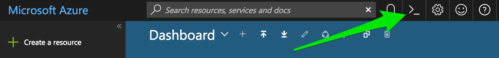
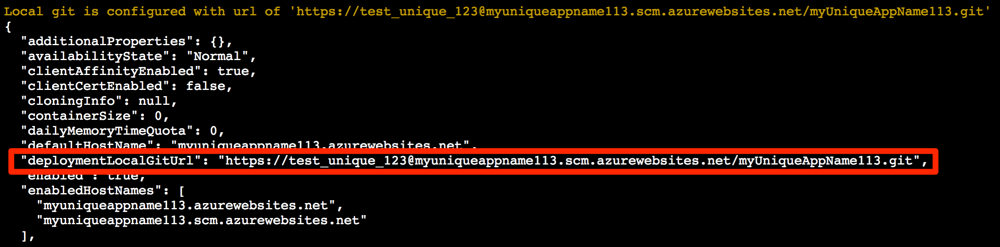
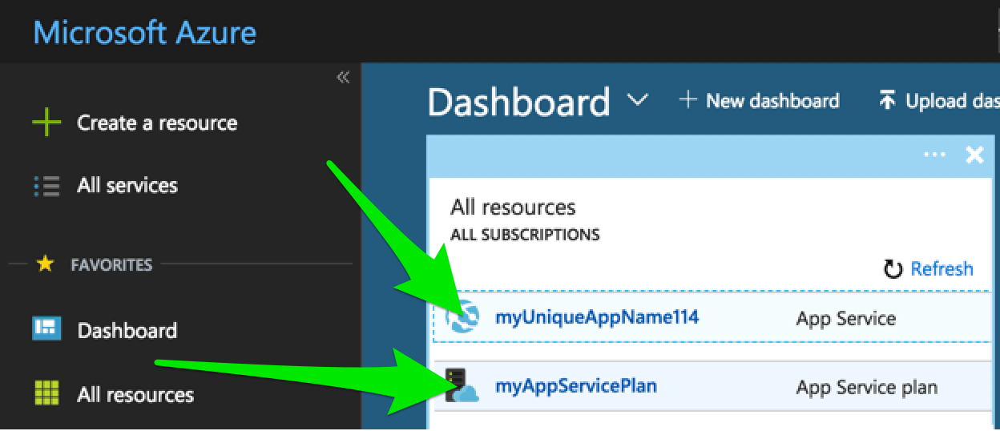

Serverless Hosting On Microsoft Azure - Simple Flask Example
Practical walkthroughs on machine learning, data exploration and finding insight.
On YouTube:
Let’s see how we can run a basic Flask application on Microsoft Azure’s serverless Web Apps.

Let’s see how we can run our basic Flask application on Microsoft Azure’s serverless Web Apps. Here, we’ll keep the steps as simple as possible as we’ll drill down deeper in subsequent chapters.
Step 1: Get An Account On Microsoft Azure
You will need an account on Microsoft Azure and at the time of writing, Microsoft offers a convenient $200 & 30-day trial on all services and 12 months access. For more information: https://azure.microsoft.com/en-us/free/
Step2: Install Supporting Tools and Libraries
Install Flask
Install Flask (if you didn’t already) using “pip install” or however you normally install Python libraries on your operating system:
pip install Flask
Install Git
Install Git (if you didn’t already) according to your operating system at https://git-scm.com/
Step 3: Create A Folder Called AzureFlaskIntro And Copy Source Files
Create a folder named “AzureFlaskIntro” and copy all the files for this project into it
Your local folder structure should look like (notice the name of the Flask script - this is the default on Azure):
AzureFlaskIntro/
├── main.py
├── ptvs_virtualenv_proxy.py
├── requirements.txt
└── web.3.4.config
Supporting Files
The “requirements.txt” file holds any Python libraries a web application needs and is used by the serverless cloud host during a web application’s deployment. You can create your own “requirements.txt” and house it in the same folder as the Flask script “main.py”. In this case it contains only one library and a version requirement:
Flask>=0.12
Note: you can check the latest version of Flask by going to the official Flask web page (http://flask.pocoo.org/) or checking the version of Flask installed on your local machine with pip freeze:
pip freeze | grep Flask
The “web.3.4.config” is the web server’s configuration file. We will use the Python 3.4 version and go with the defaults. If you decide to explore this cloud provider further, then definitely, take a look inside it.
Step 4: Open Azure Cloud Shell
Open the Azure Cloud Shell by clicking on the caret-underscore

Step 5: Create A Deployment User
This user will have appropriate rights for FTP and local Git use. Here I set the “user-name” to “test_unique_123” and “password” to “asecretP”:
az webapp deployment user set --user-name test_unique_123 --password asecretP
The response from the above command and most subsequent commands will look like the following screen shot. Look closely for any errors and issues and fix accordingly.

Your output JSON should be full of nulls, if you see “conflict” then your “user-name” isn’t unique and if you see “bad request”, your password isn’t compliant (it should be at least 8-characters long and made up of a mix of characters, numbers or symbols).
Step 6: Create A Resource Group
Here we create a resource group for a location close to you - in my case “West US” (for locations see https://azure.microsoft.com/en-us/regions/ or use the command “az appservice list-locations --sku FREE”) .
az group create --name myResourceGroup --location "West US"
Step 7: Create An Azure Service Plan
Create you Azure service plan. We set “--name” to “myAppServicePlan”:
az appservice plan create --name myAppServicePlan --resource-group myResourceGroup --sku FREE
Step 8: Create A Web App
Next create a web app and set the “--name” parameter to the name of your application (it has to be unique). I am setting mine to “myUniqueAppName114” and telling the web app that the code will be deployed via local git.
az webapp create --resource-group myResourceGroup --plan myAppServicePlan --name myUniqueAppName114 --runtime "python|3.4" --deployment-local-git
Check the large response string from the “az web app create” command and copy the following “deploymentLocalGitUrl” value. You will need this when you push your local Flask files out to Azure:

Check Your Website Placeholder
If everything worked, we should be able to visit our placeholder website. Replace “<app name>” with the application name you created in the “az webapp create” step.
http://<app name>.azurewebsites.net

If this didn’t work for you, you need to check every step over again and make sure you didn’t miss one or that any returned an error that needs to be addressed.
Step 9: Pushing The Flask Application
Now go beck to your terminal/command window on your local computer pointing to the correct directory and initialize a git session:
git init
Add all the web-application files for AzureFlaskIntro folder and check git status:
git add .
git status
git commit -am "AzureFlaskIntro local commit"
Add the remove user as displayed in “deploymentLocalGitUrl”:
git remote add azure https://test_unique_123@myuniqueappname114.scm.azurewebsites.net/myUniqueAppName114.git
It will prompt you for a password, make sure you use the one you created in the “az webapp deployment user” step (“asecretP” in my case).
Finally push it all out to Azure:
git push newazure master
That’s it! You can got back to your placeholder browser page and hit refresh and you should see “Hello World!”

Step 10: Don’t Forget To Delete Your Web Application!
If you aren’t using your web application anymore, don’t forget to delete it. If you don’t, the meter will keep running and accruing credits or cost. The easiest way to delete everything is to log into the Azure Dashboard and click on the App Service and App Service Plan you created and delete them.

Additional Information
For additional information, see the excellent post titled ”Create a Python web app in Azure” on Microsoft Azure Docs upon which this section was based on: https://docs.microsoft.com/en-us/azure/app-service/app-service-web-get-started-python
Below are the four files for this post:
main.py
from flask import Flask
app = Flask(__name__)
@app.route("/")
def hello():
return "Hello World!"
if __name__ == '__main__':
app.run()
requirements.txt
Flask>=0.12
ptvs_virtualenv_proxy.py
# ############################################################################
#
# Copyright (c) Microsoft Corporation.
#
# This source code is subject to terms and conditions of the Apache License, Version 2.0. A
# copy of the license can be found in the License.html file at the root of this distribution. If
# you cannot locate the Apache License, Version 2.0, please send an email to
# vspython@microsoft.com. By using this source code in any fashion, you are agreeing to be bound
# by the terms of the Apache License, Version 2.0.
#
# You must not remove this notice, or any other, from this software.
#
# ###########################################################################
import datetime
import os
import sys
import traceback
if sys.version_info[0] == 3:
def to_str(value):
return value.decode(sys.getfilesystemencoding())
def execfile(path, global_dict):
"""Execute a file"""
with open(path, 'r') as f:
code = f.read()
code = code.replace('\r\n', '\n') + '\n'
exec(code, global_dict)
else:
def to_str(value):
return value.encode(sys.getfilesystemencoding())
def log(txt):
"""Logs fatal errors to a log file if WSGI_LOG env var is defined"""
log_file = os.environ.get('WSGI_LOG')
if log_file:
f = open(log_file, 'a+')
try:
f.write('%s: %s' % (datetime.datetime.now(), txt))
finally:
f.close()
ptvsd_secret = os.getenv('WSGI_PTVSD_SECRET')
if ptvsd_secret:
log('Enabling ptvsd ...\n')
try:
import ptvsd
try:
ptvsd.enable_attach(ptvsd_secret)
log('ptvsd enabled.\n')
except:
log('ptvsd.enable_attach failed\n')
except ImportError:
log('error importing ptvsd.\n')
def get_wsgi_handler(handler_name):
if not handler_name:
raise Exception('WSGI_ALT_VIRTUALENV_HANDLER env var must be set')
if not isinstance(handler_name, str):
handler_name = to_str(handler_name)
module_name, _, callable_name = handler_name.rpartition('.')
should_call = callable_name.endswith('()')
callable_name = callable_name[:-2] if should_call else callable_name
name_list = [(callable_name, should_call)]
handler = None
last_tb = ''
while module_name:
try:
handler = __import__(module_name, fromlist=[name_list[0][0]])
last_tb = ''
for name, should_call in name_list:
handler = getattr(handler, name)
if should_call:
handler = handler()
break
except ImportError:
module_name, _, callable_name = module_name.rpartition('.')
should_call = callable_name.endswith('()')
callable_name = callable_name[:-2] if should_call else callable_name
name_list.insert(0, (callable_name, should_call))
handler = None
last_tb = ': ' + traceback.format_exc()
if handler is None:
raise ValueError('"%s" could not be imported%s' % (handler_name, last_tb))
return handler
activate_this = os.getenv('WSGI_ALT_VIRTUALENV_ACTIVATE_THIS')
if not activate_this:
raise Exception('WSGI_ALT_VIRTUALENV_ACTIVATE_THIS is not set')
def get_virtualenv_handler():
log('Activating virtualenv with %s\n' % activate_this)
execfile(activate_this, dict(__file__=activate_this))
log('Getting handler %s\n' % os.getenv('WSGI_ALT_VIRTUALENV_HANDLER'))
handler = get_wsgi_handler(os.getenv('WSGI_ALT_VIRTUALENV_HANDLER'))
log('Got handler: %r\n' % handler)
return handler
def get_venv_handler():
log('Activating venv with executable at %s\n' % activate_this)
import site
sys.executable = activate_this
old_sys_path, sys.path = sys.path, []
site.main()
sys.path.insert(0, '')
for item in old_sys_path:
if item not in sys.path:
sys.path.append(item)
log('Getting handler %s\n' % os.getenv('WSGI_ALT_VIRTUALENV_HANDLER'))
handler = get_wsgi_handler(os.getenv('WSGI_ALT_VIRTUALENV_HANDLER'))
log('Got handler: %r\n' % handler)
return handler
web.3.4.config